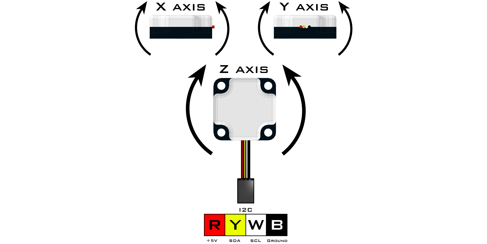

Integrating Gyro (45-2005)
The Integrating Gyro uses a 3-axis chip to obtain X, Y and Z coordinates as well as an integration of the z-axis to provide heading data. The integrated Z value is an integration of the z-axis over time and this value is used internally in heading calculations. The LED will blink at 1Hz during normal operation and will remain on during null operation (calibration). Once the null location is set, the sensor will maintain that reference until the sensor is recalibrated or zeroed.
Sensor Type : Four Wire I2C
Default I2C Address : 0x20
Sensor ID Code : 0x47
Dimensions : 32mm x 32mm x 12mm
Mounting Holes : 24mm x 24mm
Power : 5V DC, 22mA Max
Signal Logic Levels : Logic 0 - 0V, Logic 1 - 5V
I2C Bus Speed : 100kHz max
I2C Address Change Option : Yes (Even Number 0x10 - 0xEE)
Integrating Gyro Visual Programming Blocks
List of available functions:
- Fusion.intGyro(driver, addr)
- setNull()
- setZero()
- getDegrees()
- getAbsolute()
- getAxis(axis)
- setScale(scale)

Fusion.intGyro(driver, addr)
Definition
This class contains the necessary drivers for the Modern Robotics Integrating Gyro and must be called at the beginning of the program before using any other class functions.
Parameters
driver : Main driver object so the class can call driver functions (f)
addr : Enter an I2C address in hexidecimal if different from defaultReturns
Integrating Gyro Object
Example
import Fusion f = Fusion.driver() int_gyro1 = Fusion.intGyro(f) int_gyro2 = Fusion.intGyro(f, 0x40)
setNull()
Definition
Setting the gyro to null will enable the user to calibrate their gyro. The gyro must be kept perfectly still and flat during the null operation. During the null operation, the LED will be on and remain on until calibration is complete. It is recommended that this function be called before starting the main program loop. This function writes to the EEPROM every time it is called. To set the gyro to 0 without writing to the EEPROM, use the setZero() function.
Parameters
None
Returns
None
Example
import Fusion f = Fusion.driver() int_gyro = Fusion.intGyro(f) int_gyro.setNull()
setZero()
Definition
Sets the current heading to 0. Does not calibrate the gyro. This is very useful for resetting the returned heading reading without needing to remain still for calibration.
Parameters
None
Returns
None
Example
import Fusion f = Fusion.driver() int_gyro = Fusion.intGyro(f) int_gyro.setZero()
getDegrees()
Definition
Returns the value of the distance rotated from the null location in degrees. The readings are based on the Cartesian coordinate system of 0° - 359°.
Parameters
None
Returns
Degrees : int (0 - 359)
Example
import Fusion f = Fusion.driver() int_gyro = Fusion.intGyro(f) print int_gyro.getDegrees()
getAbsolute()
Definition
Returns the value of the total distance rotated from the null location in degrees. Rotating in a Clockwise fashion will produce increasing negative numbers and rotating in a Counter Clockwise direction will produce increasing positive numbers.
Parameters
None
Returns
Absolute : int (-32,767 - 32,768)
Example
import Fusion f = Fusion.driver() int_gyro = Fusion.intGyro(f) print int_gyro.getAbsolute()
getAxis(axis)
Definition
This function returns the rate of rotation for a particular axis in degrees.
Parameters
axis : char ( 'X' , 'Y' , 'Z')
Returns
Axis Rotation
Example
import Fusion f = Fusion.driver() int_gyro = Fusion.intGyro(f) print int_gyro.getAxis('X')
setScale(scale)
Definition
This function allows for scaling on the z-axis. The z-axis scaling coefficient is a 16-bit value meant to scale the heading reading so that more precise measurements can be made.
The formula for calculating the z-axis scaling coefficient (scale):Therefore if an Integrating Gyro rotates 360° but the returned heading values read 380°, (20° if reading in degree mode) which is 20° over what was expected, then the formula above can be used to scale the reading.
scale = Angle Rotated / Heading Value
scale = 360 / 380
scale = .947Then the setScale(scale) function can be called with the scale that was found during calculations.
int_gyro.setScale(.947)Once the value is set using this function, it will be saved in EEPROM. Therefore it only needs to be called once to be set and the only way to change the value it to call the function again.
Parameters
scale : float
Returns
None
Example
import Fusion f = Fusion.driver() int_gyro = Fusion.intGyro(f) int_gyro.setScale(.947)
If any problems arise
Contact Modern Robotics, Inc. at support@modernroboticsinc.com with a detailed description of the steps you have taken and observations you have made.
Email Subject: Fusion Python Integrating Gyro